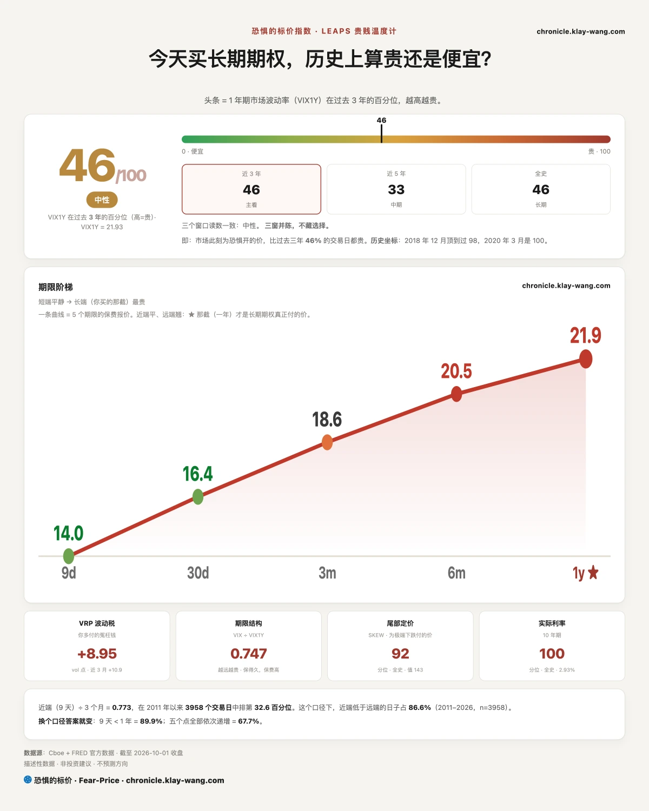
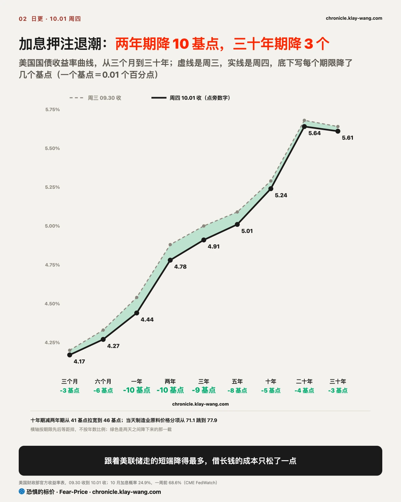
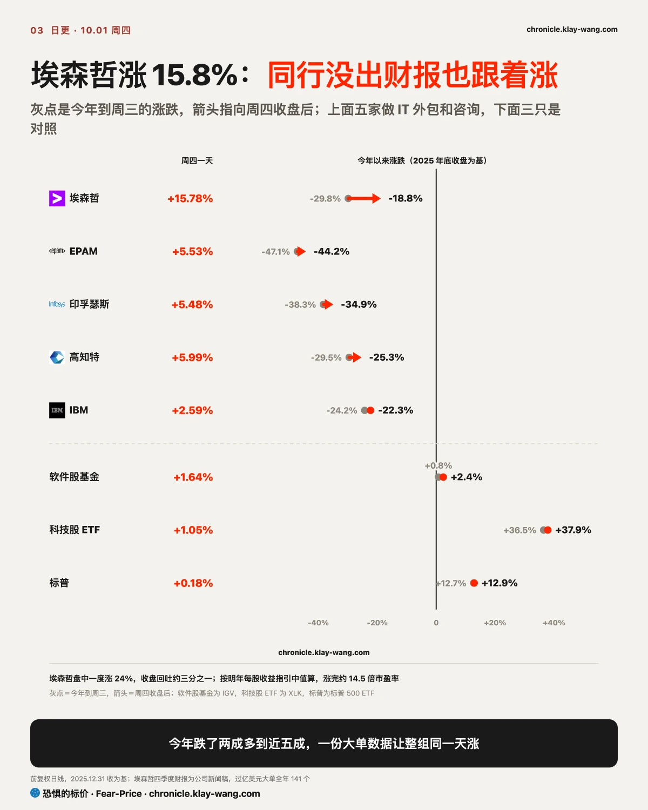
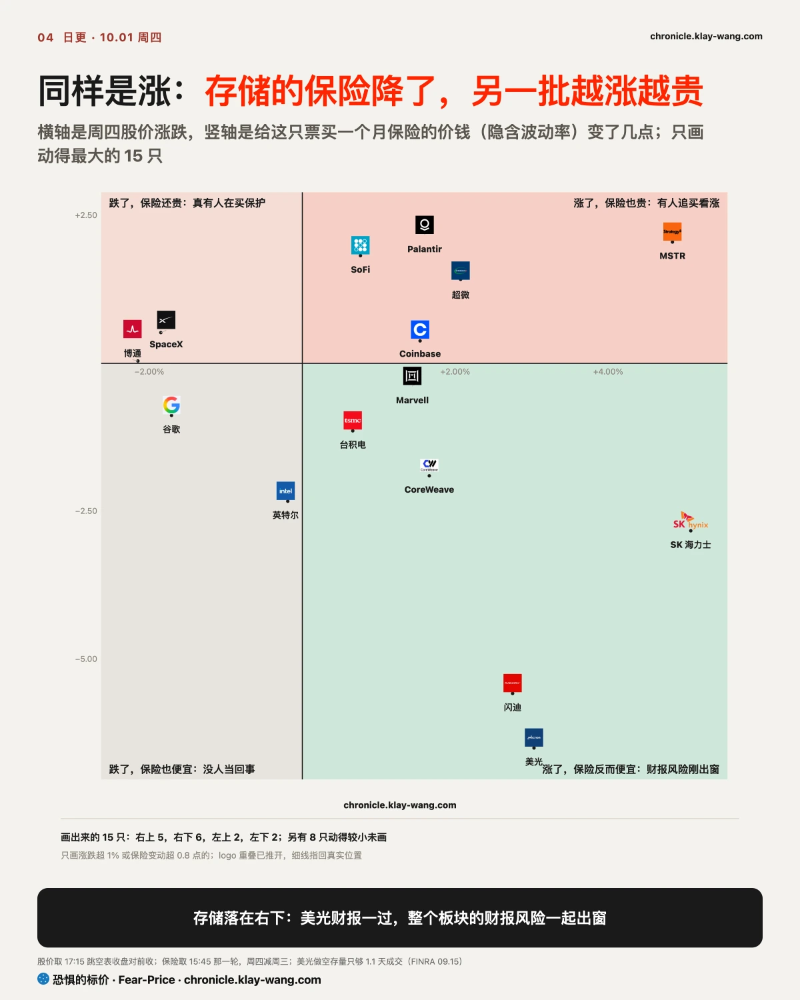

恐惧的标价指数（Fear-Price Index）· 2026-10-01 · 读数 46.4/100：一年期波动率 VIX1Y 为 21.93，处于近三年第 46.4 百分位，高即贵。逐日台账与口径 → chronicle.klay-wang.com · 转载注明：恐惧的标价指数 · Fear-Price
给美股买一年保险的价钱，周四从 42.9 分升到 46.4 分（满分 100，越高越贵），比 8 月底的 45.5 还高。周三那期的读法是，这点涨来自尾盘那一跌，收复了就会退回去；周四标普收复了周三收盘，保险却又贵了 3.5 分，周三的判断错了。除了 9 天期从 14.2 降到 14.0，一个月、三个月、半年、一年都在小幅上涨：股市涨了一天，没有人因此给保险降价，市场没放松警惕。对你来说，现在配保护在三年里正好居中；手里的票想保住已有的涨幅，三个月以内的保护比一年期便宜得多。
K 指数 1.714，低于周三定稿的 1.852。K 越接近 1，说明越多人把担心变成真金白银买保护；周四嘴上的担心多了一点，掏钱买保护的没跟着多。按今天的恐贪读数，VIX 要升到 28.1 以上，K 才会跌破 1。历史在 chronicle.klay-wang.com/kindex，指数在 chronicle.klay-wang.com/fear-price。

结论先放前面：10 月上半月偏稳；往上能走多远看十年期，按现在的定价它松不下来，所以这一段涨要靠利润，靠不了估值。
近处为什么稳。股票最经不起借钱成本突然变贵，10 月一个最明确的风险，是 10 月 28 日议息会再加一次息。纽约联储主席威廉姆斯周二说不必急着调整，副主席杰斐逊周四说要更多时间看数据，押 10 月加息的概率从一周前的 68.6% 跌到 24.9%，市场改押 12 月。两年期收益率反映的是接下来一两年的利率路径，周四降了 10 个基点，是 9 月加息以来降得最多的一天。这颗雷先拆了。
长端为什么没松。把一次加息从 10 月推到 12 月，对十年里的平均利率影响很小，十年期本来就该比两年期降得少，这一点说明不了什么。要看的是它停在哪：十年期 5.24%，仍在 2002 年以来的高位，三十年期 5.61%。同一天公布的制造业数据里，原料价格分项从 71.1 跳到 77.9，油价又涨了 3%，通胀没退，借钱十年要的补偿没有理由下来，这笔补偿最后由借钱的人付钱。
股票的估值，是拿长期利率去折算未来的利润。长端不降，估值就抬不上去；今年标普 500 ETF 涨了 12.9%，靠的是利润，这个月也只能靠利润，月底大科技的财报因此比美联储更要紧。
短端一降，先受益的是借短钱的。小公司借钱多靠银行贷款，利率跟着短端走；地区银行吸存款放贷款，短端降得多、长端降得少，赚的差价变宽。周四小盘股、地区银行、等权标普都跑赢了标普 500 ETF，500 只成分股里 295 只上涨，周三只有 113 只。一天的上涨家数说明不了趋势，方向和利率对得上。你手里如果全是九月领涨的那几只大票，这一段要盯的是它们的利润，美联储帮不上忙。
我的判断是这三条，按 2011 年以来的历史算，站住的概率都在八成以上：
- 10 月 2 日（周五）非农之后，两年期收在 4.92% 以下，回不到威廉姆斯讲话前的周一水平。2023 年以来，非农当天两年期涨 14 个基点以上的只占一成半；真收回 4.92%，说明加息押注又回来了。
- 10 月 30 日收盘，十年期仍在 5% 以上。2011 年以来，十年期一个月降 25 个基点以上的约一成；收在 5% 以下，说明长期补偿开始退，上限比这里写的高。
- 10 月 16 日（周五）前，VIX 收盘不上 25。VIX 在 15 到 18 之间时，接下来两周冲上 25 的，2011 年以来只有 6%；冲上去了，说明近处并不稳。
长端也有人下注。一年后到期、行权价比现价高一成多的长债基金看涨期权，周四新开了约 7.6 万张，原有持仓只有 4190 张，成交额约 1230 万美元，是当天远期合约里最大的一笔；赌的正是十年期一年内能不能降下来。长债个股页在 chronicle.klay-wang.com/t/TLT。

埃森哲周四涨 15.77%，盘中一度涨 24%，同行没出财报也跟着涨了 5% 到 6%。
这门生意是替大公司干 IT 和咨询的活，比如帮银行改造系统、帮企业上云、装 AI，按项目收钱，卖的是工程师和顾问的工时。同一类的还有高知特、EPAM、印孚瑟斯，以及 IBM 的咨询部门。
今年这一组跌得很深，是因为市场担心 AI 抢它们的饭碗。一个项目以前往往要几百个工程师写几个月代码，AI 写代码越来越强以后，客户可能不用再买那么多工时；靠人头赚钱的生意，人头需求一少，收入就有问题。涨之前，埃森哲今年跌了近三成，EPAM 跌了 47%，同期科技股 ETF 涨了三成多：钱都去追卖 AI 的公司，从可能被 AI 替代的这边撤了出来。业绩其实没垮，埃森哲全年收入按本币还增长了 5%。
周四它盘前公布的四季度财报，给了第一份能回答这个担忧的数：单笔过亿美元的大单全年 141 个，创新高；四季度收入高于公司自己给的指引上沿；明年还预计增长 3% 到 6%。意思是大客户还在签大单，而且越签越多，至少到现在，AI 没让客户少找它。担忧被打掉一部分，同行就跟着一起涨，大家默认它们的需求也还在；软件股同一天只涨了 1.64%，这次只是这一组在重新估价。
盘面上要留个心眼。盘中涨 24%、收盘回吐了三分之一，说明追进去的钱也不笃定；涨完按明年指引算约 14.5 倍市盈率，仍然不贵。10 月 16 日（周五）前，埃森哲收盘应当守得住 200 美元：要再跌 5.8% 才破，按过去四年的走势，11 个交易日跌这么多的大约四次里一次。跌破了，这次重估就站不住，说明这一涨只是情绪。你手里如果有这类外包股，下一家同类公司财报里的大单数，比这一天的涨幅更要紧。

美光、闪迪、海力士周四都涨了，保险反而便宜：美光的一个月保险从 59.11 降到 52.61，在动得最大的 15 只票里落在右下那一块。这一块平时多读成卖空的人在回补，这一天不能这么读：美光的财报风险过去了，闪迪和海力士的期权里也替美光的财报定过价，三只一起降。空头本来就少，美光做空存量只够 1.1 天成交，闪迪 1.0 天，谈不上被逼回补。
涨是白天真金白银买出来的。美光低开 1.04% 后一路被买，收涨 3.03%，成交比周三多四成多。周三那期的读法是好消息早在价格里，周四证明这个读法错了，财报夜没涨的部分在第二天补了。右上角的 MSTR、Palantir、SoFi 是另一种涨：股价和期权一起变贵，多半是有人追着买看涨期权。
9 月 22 日的判断是，存储那几天的涨是买进去的人自己在配保护；按当时的判据，周四两只续涨、保险双双跌到线下，这个判断收回。收回暴露的是判据本身：财报前后保护价的涨跌，主要是财报那一份风险，用它分辨是谁在买，读不准。你手里如果有存储股，要看的是成交能不能守在周四之上，保护价这几天读不出东西。个股页在 chronicle.klay-wang.com/t/MU。
季末尾盘是调仓，半对。 9 月 30 日立案时的判据是周四收盘回到 766.34 以上。标普 500 ETF 收 763.99，收复了周三收盘，没回到那半小时之前；最后半小时成交回到平常，周三那种集中卖单没再出现。
英伟达 11 月看涨是往上滚仓，收回。 周四早上的结算持仓，也就是还留在手里的合约数：旧的两档只减了 4.2 万和 4.7 万张，没到判据要的 5 万张；新的两档各加了约 7 万张，新开的比撤掉的多 5 万多张，这批仓位不只是挪了位置。英伟达个股页在 chronicle.klay-wang.com/t/NVDA。
利率上行来自长期补偿，成立。 判据是两年期回到 4.92% 以上并涨得比十年期多，周四两年期反而降到 4.78%。
利率冲击先落在地区银行，10 月 2 日 15:45 开奖。 这条 9 月 28 日碰过一次线，地区银行基金的一个月保险当天落到一年期之下；当时定下一天碰线不作数，按 10 月 2 日 15:45 的读数开。周四收盘时它的一个月保险 29.74，仍在一年期 29.01 之上。
存储缩量跌是没人接，成立；利率冲击还没传到信用，成立。 后一条差一点：六家大银行的一个月保险均值最高到 31.95，离推翻线 31.98 只差 0.03。
手里有长债、或房贷要续的：短端松了，长端没松。房贷跟十年期走，这一轮便宜不了多少；按历史，十年期一个月里降 25 个基点以上的约两成，别把等降息当计划。
手里有小盘股、地区银行的：这一段是它们的顺风，短端降对它们最直接。周五非农如果把两年期推回 4.92% 以上，这股顺风就停了。
手里有大科技股的：长端不降，往上只能靠利润；月底财报之前，涨得多的先看保护的价钱，现在一年期保护在三年里居中，不算贵。
手里有芯片、存储或外包股的：存储这段涨是白天买盘推的，要看成交能不能守住；外包股是一份数据推翻了一部分担忧，下一家同类财报的大单数是关键。